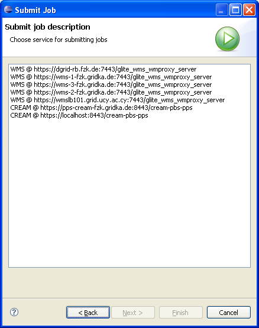

Wizard "Submit job" appears, in which user can select Job Service, to which job will be submitted:

In order to submit job to the grid you have to write a class implementing interface IGridJobService and register it by contributing to extension point: eu.geclipse.gria.griaElementCreators.
You have also to identify your job, so you must implement class implementing interface IGridJobID
All these tasks are described below.
eu.geclipse.core.model.IGridJobService
public boolean canSubmit( final IGridJobDescription desc ) {
return ( desc instanceof JSDLJobDescription );
}
submitJob()
public IGridJobID submitJob( final IGridJobDescription description,
final IVirtualOrganization vo,
final IProgressMonitor monitor )
throws ProblemException {
IGridJobID jobID = null;
authenticate();
String jobDesc = translateJsdl( description );
JobIdentifier serviceJobId = this.webservice.submitJob( jobDesc );
jobID = new GridgeJobID( serviceJobId, vo, this.serviceUri );
return jobID;
}
eu.geclipse.core.model.impl.AbstractGridElementCreator and implements interface eu.geclipse.core.model.ICreatorSourceMatcher.
boolean canCreate( final Object source ).
public boolean canCreate( final Object source ) {
boolean canCreate = false;
if( source instanceof URI ) {
URI uri = ( URI )source;
Path servicePath = new Path( uri.getPath() );
canCreate = new Path( "yourmiddeware/services/jobService" ).isPrefixOf( servicePath );
} if( source instanceof YourMiddlewareJobID ) {
canCreate = true;
}
return canCreate;
}
IGridElement create( final IGridContainer parent )
public IGridElement create( final IGridContainer parent ) {
IGridElement service = null;
Object source = getSource();
if( source instanceof URI ) {
URI uri = ( URI )source;
service = new YourJobService( uri );
} else if( source instanceof YourMiddlewareJobID ) {
YourMiddlewareJobID jobID = ( YourMiddlewareJobID )source;
service = new YourJobService( jobID.getJobServiceUri() );
}
return service;
}
eu.geclipse.core.gridElementCreator (open file plugin.xml on page "Extensions")
eu.geclipse.core.model.IGridJobID is passed to every method, which deal with submitted job. It should contain all information needed to identify particular job on remote service.IGridJobID:
eu.geclipse.core.jobs.GridJobID.String GridJobID#setData(String)String GridJobID#getData(String)eu.geclipse.core.jobs.jobID